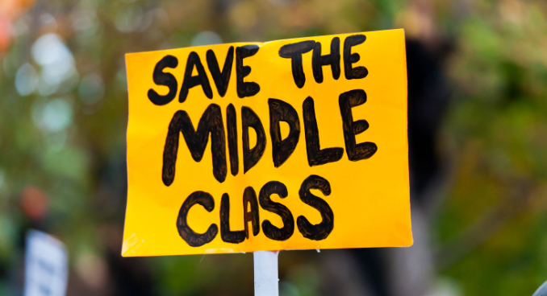

The first source we'll look at is the Joseph Rowntree Foundation (JRF) UK Poverty 2024 report. Published in January 2024, it provides up-to-date information on how poverty has been rising since COVID-19. The report highlights that 6 million people in the UK have been in poverty since 2021-22. In the late 2010s, about 20% of the UK population was in deep poverty. By 2021/22, the UK's average poverty rate was 21%, with Northern Ireland at 17% (the lowest) and the West Midlands at 27% (the highest). Wales also has a significant poverty rate at 22%.
The report indicates that political decisions since the 1970s, like the Thatcher administration's reforms, have increased poverty. It shows that 30% of children in the UK live in poverty, the highest rate in the UK.
 The second source is an article from The Guardian titled "UK middle classes struggling despite income of up to £60,000 a year." This article, published in February 2024, discusses the challenges the middle class faces in maintaining their lifestyle due to stagnant wages and rising housing costs. For instance, rent increases and higher mortgage interest rates have trapped many middle-class families, pushing them towards poverty. Economically, the middle class has weakened while the upper class has profited from rising prices. This has led to increased mental health issues and decreased sales in local businesses in lower-income areas.
The third source is from the World Economic Forum (WEF), discussing the "middle-income trap" (MIT). Published in September 2024, the article explains how over 100 countries are stuck in the MIT, where their Gross National Income (GNI) per capita is between $1,136 and $13,845. To escape this trap, countries need a GNI per capita of over $13,845.
The WEF article highlights that most MIT countries are in Africa and Asia and struggle with economic burdens and weak political power.
In recent years, poverty has risen due to COVID-19, the cost-of-living crisis, and political instability. Inflation peaked in 2022 before stabilizing, and the widening income gap has pushed many middle-class individuals into poverty. Reports from the JRF, The Guardian, and the WEF highlight the urgent need for economic stability and fair wages to combat these issues.
1-Joseph Rowntree Foundation (2024). UK Poverty 2024: The essential guide to understanding poverty in the UK.
2-Elliott Larry, "UK middle classes struggling despite income of up to £60,000 a year," The Guardian, 20 February 2024. The Guardian.
3-Hirsch Donald, "Caught in the middle- key findings," February 2024. Financial Fairness.
4-Feingold Spencer, "The 'middle-income trap' is holding back over 100 countries. Here's how to overcome it," World Economic Forum, 4 September 2024. WEF.